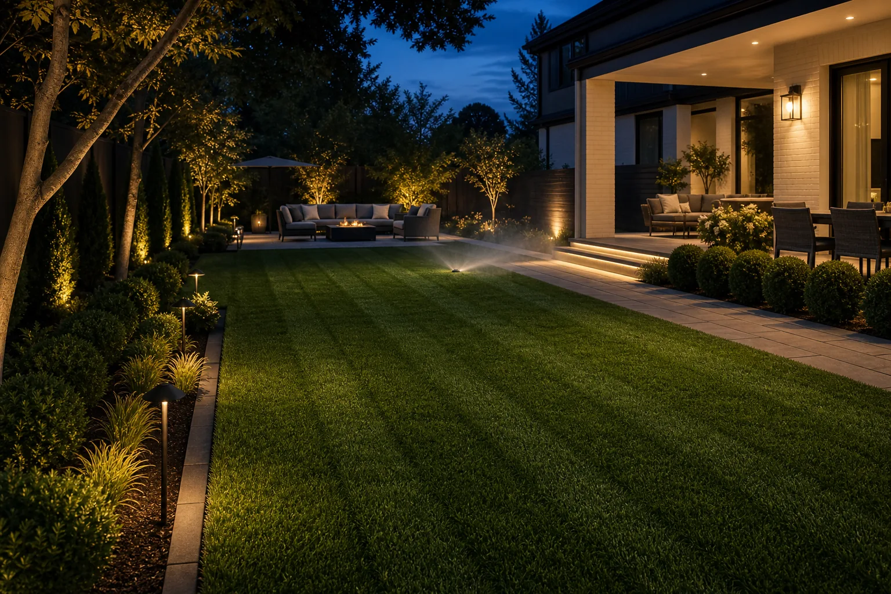

Mowing & Edging
Consistent cut height, clean sidewalk lines, bed edges, clippings control, and service notes for recurring visits.
Residential lawn care coordination
Request mowing, edging, seasonal cleanup, turf treatments, shrub care, and irrigation checks through one clear intake process.
What we coordinate
The difference is in the edges, transitions, turf health, access notes, and how each visit is documented. We help translate yard needs into a practical scope before a provider confirms the final estimate.

Gate access, pets, slope, drainage, sprinkler heads, delicate beds, recent seed, storm debris, and preferred cut height all affect the right approach.
Property architecture
A good maintenance plan respects sightlines, paving, beds, slopes, shade, irrigation, and how the yard is actually used week after week.
Walkways, curbs, beds, fences, and patio transitions determine how polished the property feels after mowing. We collect those notes up front so providers can price the real edge work, not just the turf area.
Shade pockets, low wet areas, fast-growing sunny strips, and high-traffic zones may need different attention than the rest of the lawn.
Property intelligence
Better intake reduces missed details: sprinkler heads, pet zones, gates, steep grades, seed timing, debris volume, HOA rules, and areas that need lighter handling.
Gate width, parking, lockbox notes, pets, and restricted areas.
Grass height, soil compaction, drainage, rocks, roots, and slope.
Recurring cadence, weather windows, treatment intervals, and cleanup deadlines.
Services
Choose a single visit, recurring care, or a seasonal improvement plan that can include mowing, edging, feeding, cleanup, and inspections.
Consistent cut height, clean sidewalk lines, bed edges, clippings control, and service notes for recurring visits.
Aeration, overseeding, fertilization, weed observations, soil notes, and seasonal recovery recommendations.
Leaf removal, bed refreshes, debris haul-away options, shrub trimming, and pre-season yard preparation.

Seasonal rhythm
Spring recovery, early-summer growth, heat stress, storm debris, leaf load, and dormant-season prep all call for different scopes. The site intake helps turn those changes into clear provider instructions.
How intake works
Share photos, ZIP code, lot size, access notes, and what needs attention.
We structure the request around frequency, materials, equipment, and timing.
Independent providers confirm pricing, schedule, insurance, and final terms.
Recurring work can be adjusted around weather, growth, and seasonal needs.
FAQ
Verdant Yard Care is an intake and coordination service. Independent providers confirm and perform the work unless a direct written agreement states otherwise.
Photos, lot size, gate access, grass height, service frequency, debris volume, sprinkler locations, and any HOA or municipal requirements.
Yes. Availability depends on local provider schedules and weather. For hazardous utility, flooding, or emergency conditions, contact local emergency or utility services first.